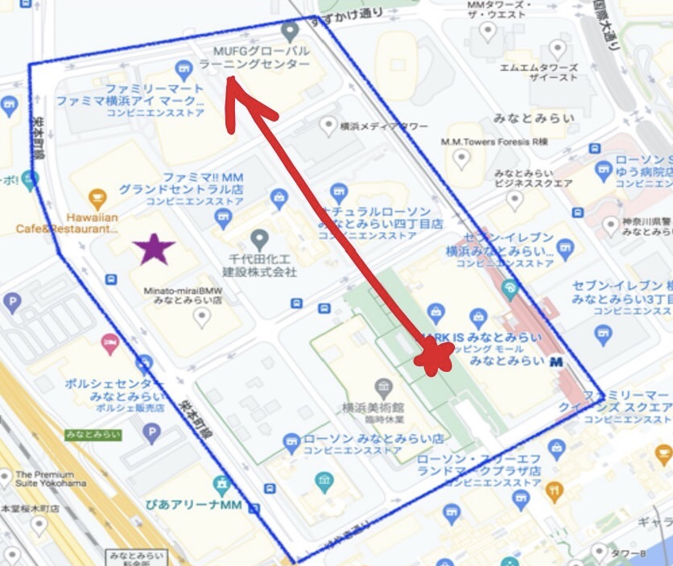

通行人の髪色について、男女・年齢に紐づけて分析する。
観察場所は上図赤矢印参照
表のように動画で髪の毛の色を目視できた合計人数は68人。そのうちは男性30・女性38人。
そのうち髪を染めていた男性4・女性20という内訳になりました。
確立にするとそれぞれ13％・53%となり、定点観察の結果とほぼ同値となりました。
結果よりやはり男性の髪を染める割合は女性と比べると圧倒的に低い。
そこで男性の髪を染めた4人の服装を確認してみると、全員が暖色のトップスを着ていることが発覚した。
標本数が少ないので有益な情報ではないが、調べてみる価値はありそう。
また、染めていた男性の年齢は20∼30代前半であったため、若気の至りで染めている人も多そうだ。